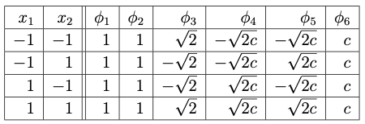

Support Vector Machine
Our main focus in this course is to study deep learning techniques. However, we take a slight deviation in this chapter to briefly discuss the core idea behind another similar ML method called the Support Vector Machines (SVMs). In particular, we highlight the geometric foundations of SVMs, which provide a useful perspective for comparing the learning methodologies of SVMs and artificial neural networks.
We demonstrate the SVM method for linearly separable datasets in the first Section «Click Here», where we derive primal optimization problems whose solution is the weight vector for the optimal separating hyperplane. We also derive the dual optimization problem and discuss its advantages when compared to primal problem. As we did in the previous chapter, we then go beyond linearly separable datasets in the last Section «Click Here», where we discuss kernel tricks to construct SVM for a dataset which is nonlinearly separable.
Marc Peter Deisenroth, A. Aldo Faisal, Cheng Soon Ong, Mathematics for Machine Learning, 2020.
Linearly Separable Dataset
In the preceding section, we studied a perceptron, which is a basic model in deep learning architectures. Recall that the perceptron algorithm updates its weight vector based on misclassified examples, and the algorithm converges if and only if the dataset is linearly separable. However, when multiple separating hyperplanes exist, the perceptron may converge to any one (see Figure-(a) below) of them without regard to its generalization ability.
On the other hand, SVMs are classification methods in the broader field of machine learning that also seek a linear decision boundary (possibly in a transformed feature space) but are based on a different learning principle from the perceptron. Rather than updating the weight vector based on individual misclassifications, an SVM selects the one that maximizes the margin between the two classes among all possible separating hyperplanes (see Figure-(b) below). This margin-based criterion leads to an optimal separating hyperplane, called the SVM solution, with a relatively strong generalization ability.
In this subsection, we briefly discuss the learning procedure of SVMs for linearly separable dataset, while postponing the treatment of the nonlinearly separable case to the next subsection.
Hard and Soft Margins
Let us start with the definition of the margin between two class of examples in a given linearly separable dataset.

Consider a linearly separable dataset
Let the decision boundary be defined by the hyperplane
for a given weight vector \(\boldsymbol{w}\in \mathbb{R}^n\) and bias \(b\in \mathbb{R}\). The geometric margin (or simply margin) \(\rho\) of the hyperplane \(H\) with respect to the dataset \(\mathcal{D}\) is defined as
Clearly the margin of a given hyperplane is the distance between the hyperplane and the nearest example in \(\mathcal{D}\). The SVM solution is the separating hyperplane that maximizes the margin as illustrated in the above Figure-(b).
A separating hyperplane (also referred to as decision boundary) classifies all the examples of \(\mathcal{D}\) correctly. This is equivalent to the condition that
The above conditions can be combined to obtain the following lemma.
is a separating hyperplane of a dataset \(\mathcal{D}\) if and only if
The difference between using either the binary or the bipolar labels is precisely in the condition given in the above lemma and in the update rule of the perceptron given in the previous chapter. If binary labels are used, then the condition in the above lemma takes the form \(\Delta_k \big(\boldsymbol{w}\cdot \boldsymbol{x}_k - b\big) \ge 0\), where \(\Delta_k\) is defined in multiple epoch perceptron algorithm. On the other hand, if bipolar labels are used along with the bipolar activation function in the perceptron learning, then the update rule involves \(y_k\) directly, in place of \(\Delta_k\).
The following lemma is a consequence of the Definition «Click Here» on margin, and the condition given in the above lemma.
is a separating hyperplane of a dataset
If \(\rho\) is the margin of \(H\) for the dataset \(\mathcal{D}\), then
In view of the above lemma, the SVM solution of a linearly separable dataset can be obtained as the optimal separating hyperplane of the dataset.
For a given linearly separable dataset \(\mathcal{D}\), the optimal separating hyperplane is defined as the hyperplane
where \((b^*, \boldsymbol{w}^*)\) is a maximizer of the constrained optimization problem
where \(\rho\) is as given in Definition «Click Here» .
The optimization problem (3.2) can be expressed equivalently as a convex optimization problem in the weight vector \(\boldsymbol{w}\), which is strictly convex and therefore admits a unique global solution for \(\boldsymbol{w}.\)
Consider the convex optimization problem
where
is a linearly separable dataset.
Let \((b^*, \boldsymbol{w}^*)\) be a maximizer of (3.2) with the corresponding margin \(\rho^*>0\), and let \((b_*,\boldsymbol{w}_*)\) be a minimizer of (3.3). Then the following statements hold:
- There exists an \(\alpha\in \mathbb{R}\) such that \((\alpha b^*, \alpha\boldsymbol{w}^*)\) is a minimizer of (3.3).
- There exists a \(\beta\in \mathbb{R}\) such that \((\beta b_*, \beta\boldsymbol{w}_*)\) is a maximizer of (3.2).
- Let \(\tilde{\boldsymbol{w}}^* = \boldsymbol{w}^*/\rho^*\) and \(\tilde{b}^* = b^*/\rho^*\).
Since \((b^*,\boldsymbol{w}^*)\) is a maximizer of (3.2), we have \( y_k (\boldsymbol{w}^*\cdot \boldsymbol{x}_k - b^*)\ge \rho^*. \) Since \(\rho^*>0\), we can write the inequality as
\begin{eqnarray} y_k \left( \frac{\boldsymbol{w}^*}{\rho^*} \cdot \boldsymbol{x}_k - \frac{b^*}{\rho^*} \right) \ge 1. \end{eqnarray}(3.4)Therefore, \((\tilde{b}^*, \tilde{\boldsymbol{w}}^*)\) satisfies the constraint of the problem (3.3). Since \(\boldsymbol{w}^*\) is an unit vector, we have
\[ \|\tilde{\boldsymbol{w}}^*\| = \left\|\frac{\boldsymbol{w}^*}{\rho^*}\right\| = \frac{1}{\rho^*}. \]Since \(\displaystyle{\text{argmin}_{(b, \boldsymbol{w})}} \frac{1}{\rho^*} = \text{argmax}_{(b, \boldsymbol{w})}{\rho^*},\) we see that
\begin{eqnarray} (\tilde{b}^*, \tilde{\boldsymbol{w}}^*) &=& \left\{ \begin{array}{ll} &\displaystyle{\text{argmin}_{(b, \boldsymbol{w})}} ~ \|{\boldsymbol{w}}^*\|\\ \text{subject to:}& y_k \big( \boldsymbol{w}\cdot\boldsymbol{x}_k - b \big)\ge 1,~\text{for all}~ \boldsymbol{x}_k\in \mathcal{D} \end{array}\right.\\ &=& \left\{ \begin{array}{ll} &\displaystyle{\text{argmin}_{(b, \boldsymbol{w})}} ~ \frac{1}{2}\|{\boldsymbol{w}}^*\|^2\\ \text{subject to:}& y_k \big( \boldsymbol{w}\cdot\boldsymbol{x}_k - b \big)\ge 1,~\text{for all}~ \boldsymbol{x}_k\in \mathcal{D}. \end{array}\right. \end{eqnarray}(3.5)Thus, we have proved the first condition of the theorem with \(\alpha = 1/\rho^*\).
- Let us take \(\beta=1/ \|\boldsymbol{w}_*\|\) and define \(\hat{\boldsymbol{w}}_* = \frac{\boldsymbol{w}_*}{\|\boldsymbol{w}_*\|}\) and \(\hat{b}_* = \dfrac{b_*}{\|\boldsymbol{w}_*\|}\). The claim that \((\hat{b}_*, \hat{\boldsymbol{w}}_*)\) is a maximizer of (3.2) is left as an exercise.
Let \((b^*, \boldsymbol{w}^*)\) be the hard margin SVM. If an example \((\boldsymbol{x}_k, y_k)\in \mathcal{D}\) is such that
then the vector \(\boldsymbol{x}_k\) is said to be a support vector. These are the vectors which are very close to the optimal separating hyperplane.
Does the result hold in \(\mathbb{R}^3\)?
There are broadly two reasons why a dataset may fail to be linearly separable. One is when the decision boundary is not a hyperplane. In such cases, we use a feature space transformation, as discussed in Section«Click Here», where basis functions may be implicitly approximated using kernels, which we discuss in the next subsection.
The second scenario is when the dataset contains outliers or noise, making a perfect separation impossible. In such cases, one has to allow some classification errors while maximizing the margin. This leads to the concept of a soft margin SVM whose solution is obtained as the minimizer of the problem
Here \(C>0\) is a tuning parameter called the regularization parameter, and \(\boldsymbol{\xi} = (\xi_1,\xi_2,\ldots, \xi_N)\) represents the margin errors. Each variable \(\xi_k\), \(k=1,2,\ldots, N\), referred to as a slack variable, quantifies the extent to which the point \(\boldsymbol{x}_k\) violates the margin constraint. This allows some tolerance in classification including the possibility of lying on the wrong side of the decision boundary.
Equivalently, the support vectors are precisely the training points \((\boldsymbol{x}_i, y_i)\) for which
Loss-function form
We now present the equivalence between the quadratic optimization problem (3.6) and an unconstrained optimization problem that involves a loss function based on the hinge loss.
We can eliminate the slack variables \(\boldsymbol{\xi}\) and write the constraints in (3.6) directly in terms of a hinge loss as
where \(h(\boldsymbol{x}) = \langle \boldsymbol{w}, \boldsymbol{x} \rangle - b\) and \(y\in \{-1, 1\}\). Then the soft margin SVM objective (3.6) can be written as
where
is the empirical risk based on the hinge loss. The first term in (3.7) is called the regularizer.
Subgradient Descent Algorithm
In this subsection, we outline an algorithm based on the subgradient descent method for the soft margin problem with hinge loss given by (3.7)-(3.8).
Let us define the cost function as
where \(\lambda\) is the regularization parameter, and the hinge loss \(\ell_{\text{hinge}}\) is given by
The aim is to compute the minimizer of the cost function. That is, to find
Since both the regularizer and the empirical risk are convex with respect to \((b,\boldsymbol{w})\), the cost function is convex. Moreover, since the regularizer is strictly convex in \(\boldsymbol{w}\), for \(\lambda>0\), the optimal weight vector \(\boldsymbol{w}^*\) is unique.
We use the gradient descent method to compute the global minimizer of the cost function. Since the hinge loss function is not differentiable, we use subgradients and the resulting version of the gradient descent method is called the subgradient descent method. The subgradient of the hinge loss function with respect to \(\boldsymbol{w}\) is given by
and the subgradient with respect to \(b\) is given by
Therefore, the subgradient of the cost function with respect to \(\boldsymbol{w}\) and \(b\) are given, respectively, by
The subgradient descent update rule for minimizing the primal soft margin SVM with hinge-loss objective is defined as
where \(0<\eta<1\) is the learning rate.
Input:
- the training dataset \(\mathcal{D}_\text{train}=\{(\boldsymbol{x}_k,y_k)~|~ k=1,2,\ldots, N_\text{train}\}\);
- the initial weight vector \(\boldsymbol{w}_0=(w_{0,1}, \ldots, w_{0,n})\in \mathbb{R}^{n}\) and the bias \(b_0\);
- an integer \(0< m \le N_\text{train}\);
- a sufficiently large positive integer \(T\); and
- a regularization parameter \(\lambda \in (0,\infty)\).
Processing: [Subgradient Update Rule]
Step 1: For each \(t=1,2,\ldots, T\), select a set of \(m\) distinct training example, iid randomly, and denote it as
Step 2: Check and collect the set of points \(A_{t}^- \subseteq A_t\) that are not classified correctly by the hyperplane \((b_{t-1}, \boldsymbol{w}_{t-1})\). Let the cardinality be \(\#(A_{t}^-) = m_t.\)
Step 3: Set \(\eta_t = \dfrac{1}{\lambda t}\).
Step 4: Perform the subgradient descent update as follows: If \(m_t>0\), then
Else,
Output: \((b_T, \boldsymbol{w}_T).\)
Shalev-Shwartz, S., Singer, Y., Srebro, N., and Cotter, A. Pegasos: primal estimated sub-gradient solver for SVM. Math. Program, 127, pp 3--30 (2011).
DOI (https://doi.org/10.1007/s10107-010-0420-4)
This method is often referred to as subgradient projection method. For \(m=N_{\text{train}},\) the method is the deterministic subgradient method and for \(m=1\), the method is called the stochastic sub-gradient method.
Dual Optimazation Problem
The SVM problems (3.3) and (3.6) are referred to as the primal optimization problems. These are convex optimization problems with quadratic objective functions and linear constraints. An alternative formulation is derived from the primal problem which is referred to as the dual optimization problem which are equivalent to the original problem.
A convex dual problem can be derived by forming the Lagrangian of the primal problem as
where the first two terms correspond to the objective function in (3.6), and the expressions inside the brackets correspond to the inequality constraints enforced using the parameter vectors \(\boldsymbol{\alpha}\ge \boldsymbol{0}\) and \(\boldsymbol{\beta}\ge \boldsymbol{0}\), called the Lagrange multipliers.
The gradient of \(\mathcal{L}\) with respect to \(\boldsymbol{w}\) is given by
Also, differentiating \(\mathcal{L}\) with respect to the bias \(b\) and \(\xi_k\), for \(k=1,2,\ldots, N\), gives
In order to obtain the extremum of the Lagrangian, we equate the above three expressions to zero. First, equating gradient vector in (3.14) to zero, we obtain
which shows that the optimal weight vector of the primal problem (3.6) can be obtained as a linear combination of the input vectors where the coefficients are such that
from stationarity of the Lagrangian with respect to \(b\). Note that only those vectors \(\boldsymbol{x}_k\) for which \(\alpha_k>0\), for \(k=1,2,\ldots, N\) contribute to the weight \(\boldsymbol{w}\) and they are called support vectors.
Substituting (3.17) and (3.18) into (3.6), we get
Equating (3.16) to zero, we obtain
Thus, we have proved
Further, since \(\boldsymbol{\beta}\ge \boldsymbol{0}\), we see that \(\alpha_k\le C\) for each \(k=1,2,\ldots, N\).
The following constrained optimization problem is called the Lagrange dual problem associated to the primal problem (3.6):
Using (3.19), the Lagrange dual problem can also be written as
The above dual problem gives \(\boldsymbol{\alpha}^*\) which can be substituted in (3.17) to obtain the weight vector \(\boldsymbol{w}^*\). To obtain an approximation to \(b^*\), compute \(|y_k - \boldsymbol{w}^*\cdot \boldsymbol{x}_k|\) for all support vectors \(\boldsymbol{x}_k\) from the dataset and take the median value as the value of \(b^*\).
for all feasible \(b, \mathbf{w}, \boldsymbol{\xi} \ge 0\) and \(\boldsymbol{\alpha}, \boldsymbol{\beta} \ge 0\).
Observe that
Thus, a saddle point is a point where the Lagrangian is simultaneously minimal with respect to the primal variables and maximal with respect to the dual variables. This is exactly the point that satisfies the Karush-Kuhn-Tucker (KKT) conditions for the SVM problem, which are given as follows:
Stationarity:
Primal feasibility:
Dual feasibility:
Complementary slackness:
A point \((\mathbf{w}^*, b^*, \boldsymbol{\xi}^*, \boldsymbol{\alpha}^*, \boldsymbol{\beta}^*)\) satisfying these conditions is a saddle point of \(\mathcal{L}\).
These problems have been extensively studied in the optimization literature, and various computational algorithms are available. We omit further discussion of this topic, as our primary focus is on deep learning techniques. SVM is introduced here mainly for comparison, to highlight an alternative classical approach to classification problems within the broader field of machine learning.
Nonlinearly Separable Datasets
So far, we have formulated the SVM problems to classify a given dataset. If the dataset is linearly separable, then hard margin SVM can be efficiently used. On the other hand, the soft margin SVM allows some violations of the margin constraints by introducing slack variables. In this way, the soft margin SVM can handle nonlinearly separable dataset in the given input space. However, this method finally obtains a hyperplane as the decision boundary, and hence is a linear classifier in the input space with a better tolerance to noise or overlap.
In the previous chapter, we discussed how mapping data into a higher-dimensional feature space can make a dataset linearly separable. In this section, we extend our discussion from the previous chapter on feature mapping and introduce the kernel method, which enables SVM to be a nonlinear classifier.
Kernel Method: Implicit Feature Mapping
At the end of previous chapter, we have seen that through a suitable feature map, one can transform the dataset from the input space to the feature space where the dataset is linearly separable. However, explicitly constructing such a map is often impossible, especially when the dataset is large or when the separation requires a highly nonlinear decision boundary.
Kernel methods overcome this difficulty by introducing a kernel function that compute inner products in a higher dimensional feature space implicitly. This approach is known as the kernel trick. In this subsection, we outline the idea of kernel trick without getting into technical details.
First, let us give the definition of a kernel function in the context of machine learning.
Let \(\mathcal{X}\) denote an input space. A function \(\text{𝕜}: \mathcal{X}\times \mathcal{X} \rightarrow \mathbb{R}\) is called a kernel function over \(\mathcal{X}\) if there exists a feature map \(\boldsymbol{\phi}: \mathcal{X} \rightarrow \mathbb{H}\), for some Hilbert space \(\mathbb{H},\) such that
where \(\langle \cdot, \cdot \rangle\) denotes the inner product on \(\mathbb{H}\).
The following results gather some important properties of kernel functions.
is symmetric and positive semidefinite.
Then show the following properties:
- Linear combination: For any \(\alpha,\beta \ge 0\),
\[ \text{𝕜}(\boldsymbol{x},\boldsymbol{y}) = \alpha \text{𝕜}_1(\boldsymbol{x},\boldsymbol{y}) + \beta \text{𝕜}_2(\boldsymbol{x},\boldsymbol{y}) \]
is a kernel.
- Product:
\[ \text{𝕜}(\boldsymbol{x},\boldsymbol{y}) = \text{𝕜}_1(\boldsymbol{x},\boldsymbol{y}) \cdot \text{𝕜}_2(\boldsymbol{x},\boldsymbol{y}) \]
is a kernel.
- Polynomial transformation: If \(p(x)\) is a polynomial with non-negative coefficients, then \(p(\text{𝕜}_1(\boldsymbol{x},\boldsymbol{y}))\) is a kernel.
- Exponential transformation: \(\exp(\text{𝕜}_1(\boldsymbol{x},\boldsymbol{y}))\) is also a kernel.
- For any function \(f:\mathcal{X}\rightarrow \mathbb{R}\), the function \(\text{𝕜}(\boldsymbol{x},\boldsymbol{y}) = f(\boldsymbol{x})\text{𝕜}_1(\boldsymbol{x},\boldsymbol{y})f(\boldsymbol{y})\) is a kernel.
Observe that the dual problem (3.20) depends on the input vectors only through the inner products appearing in the objective function. Thus, one can implicitly work in a feature space by replacing the inner product of two input vectors with a kernel function based on a feature map \(\phi\). This procedure is often referred to as the kernel trick. Let us make the idea of kernel trick more precise.
Kernel Trick
Let us explain kernel trick more precisely. Following (3.17), the representation of the weight vector in the feature space can be written asThus, the hyperplane as the decision boundary in the input space is now transformed into a nonlinear function in the feature space given by
where \(\alpha_k\), for \(k=1,2,\ldots, N\), are obtained by solving the dual problem (3.20), but the objective function is now posed in the feature space as
The kernel trick is to replace the inner product in the above objective function with a kernel function \(\text{𝕜}(\boldsymbol{x_j}, \boldsymbol{x}_k)\). Hence, the dual problem under consideration is
The kernel trick enables us to use certain kernels without explicitly defining the corresponding feature map.
Some of the widely used kernel functions are listed below:
- Linear kernel: This kernel is defined as
\begin{eqnarray} \text{𝕜}(\boldsymbol{x}_1, \boldsymbol{x}_2) = \langle \boldsymbol{x}_1, \boldsymbol{x}_2 \rangle, \end{eqnarray}(3.27)
which corresponds to no feature mapping (the feature space is the same as input space).
- Polynomial kernel: This kernel is given by
\begin{eqnarray} \text{𝕜}(\boldsymbol{x}_1, \boldsymbol{x}_2) = \big( \langle \boldsymbol{x}_1, \boldsymbol{x}_2 \rangle + c \big)^d, \quad c \geq 0,\; d \in \mathbb{N}, \end{eqnarray}(3.28)
which maps into a higher-dimensional space involving monomials up to degree \(d\).
- Radial Basis Function (RBF) or Gaussian kernel: This is a commonly used kernel given by
\begin{eqnarray} \text{𝕜}(\boldsymbol{x}_1, \boldsymbol{x}_2) = \exp\!\left( - \frac{\|\boldsymbol{x}_1 - \boldsymbol{x}_2\|^2}{2\sigma^2} \right), \quad \sigma > 0, \end{eqnarray}(3.29)
which corresponds to an infinite-dimensional feature space.
- Sigmoid kernel: This kernel is defined as
\begin{eqnarray} \text{𝕜}(\boldsymbol{x}_1, \boldsymbol{x}_2) = \tanh\!\big( \kappa \langle \boldsymbol{x}_1, \boldsymbol{x}_2 \rangle + c \big), \quad \kappa > 0,\; c \in \mathbb{R}. \end{eqnarray}(3.30)
This kernel originates from the activation function of a neural network with one hidden layer.
- Exponential kernel: This kernel is given by
\begin{eqnarray} \text{𝕜}(\boldsymbol{x}_1, \boldsymbol{x}_2) = \exp\!\left( - \frac{\|\boldsymbol{x}_1 - \boldsymbol{x}_2\|}{\sigma} \right), \quad \sigma > 0. \end{eqnarray}(3.31)
This is similar to RBF but uses the \(L^1\)-distance instead of squared \(L^2\)-distance.
- Rational quadratic kernel: This kernel is given by
\begin{eqnarray} \text{𝕜}(\boldsymbol{x}_1,\boldsymbol{x}_2) = 1 - \frac{\|\boldsymbol{x}_1 - \boldsymbol{x}_2\|^2}{\|\boldsymbol{x}_1 - \boldsymbol{x}_2\|^2 + c}, \quad c > 0. \end{eqnarray}(3.32)
This kernel acts like a scale mixture of RBF kernels with different length scales.
Let us illustrate the kernel trick by use the quadratic polynomial kernel to train a hard margin SVM for the XOR function.
Define
Then the kernel can be written as an inner product in this feature space:
Consider the XOR function with 0 replaced by \(-1\). Using the quadratic feature map \(\phi\) given above, the dataset in the feature space is given by the following table:

XOR dataset is linearly separable in this feature space. Find the hard margin SVM and identify all the support vectors.